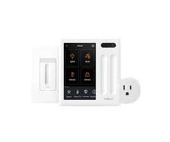

Smart Switch
|
 |
Smart switches are a device to facilitate home automation systems by closing the technology gap between conventional appliances and modern IoT-powered devices. For any device (such as a fan) to be home automated, it must be IOT compatible. Therefore, a person seeking home automation has to modify all his existing appliances, which is highly cumbersome and expensive. Smart switches provide a promising new solution: Replace your existing switchboard with our switchboard !! This makes all the existing, conventional appliances compatible. Further, another unique feature of smart switches is dual operation modes - manual and Bluetooth. This increases the reliability of the system by establishing two pathways of operation
Vijeta Priya 19BCB0077
Swethaa Ravi 19BCI0277
Rohan Gupta 20BCI0260
Sanyam Prateek 20BCI0270
Harsh Rajpal 20BCI0271